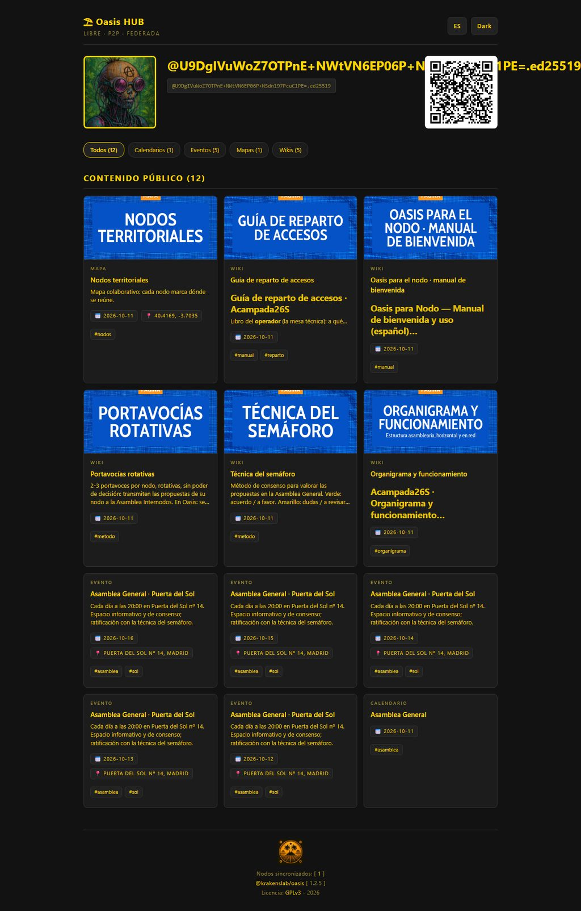
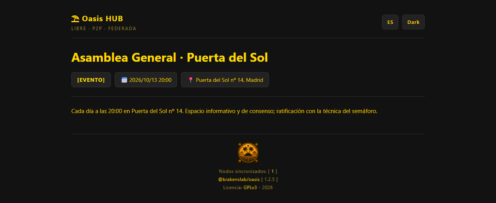
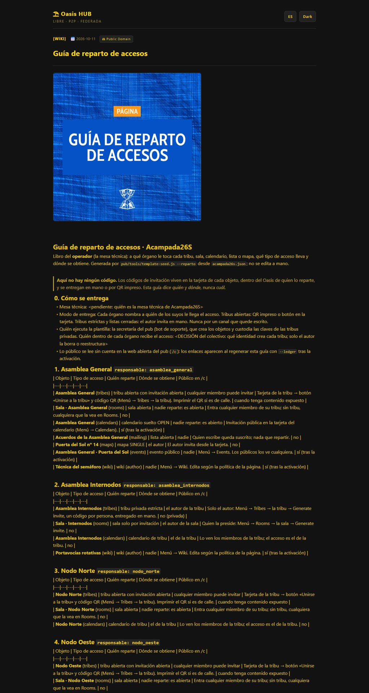
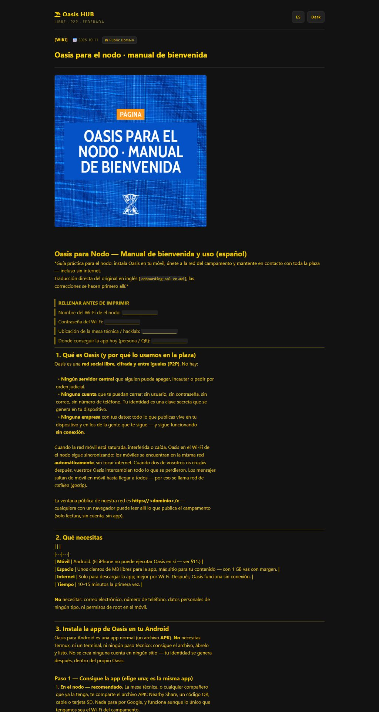
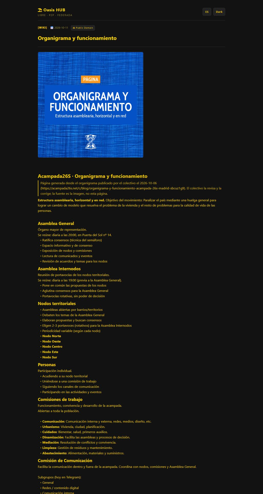

205 KB
Será:
https://acampada26s.net/c
209 KB
Será:
https://acampada26s.net/c/inhabitant/%40U9DgIVuWoZ7OTPnE%2BNWtVN6EP06P%2BNSdnl97PcuC1PE%3D.ed25519
fila C-C1 del formulario · 91 KB
Será:
https://acampada26s.net/c/calendars/asamblea-general-oxmnumy9
59 KB
Será:
https://acampada26s.net/c/events/asamblea-general-puerta-del-sol-vy2mrlae
59 KB
Será:
https://acampada26s.net/c/events/asamblea-general-puerta-del-sol-h4bsvmfa
fila C-E1 del formulario · 59 KB
Será:
https://acampada26s.net/c/events/asamblea-general-puerta-del-sol-lve7wxgf
59 KB
Será:
https://acampada26s.net/c/events/asamblea-general-puerta-del-sol-upjklt2h
59 KB
Será:
https://acampada26s.net/c/events/asamblea-general-puerta-del-sol-6mwklhbv
fila C-E1 del formulario · 59 KB
Será:
https://acampada26s.net/c/events/asamblea-general-puerta-del-sol-klkel0t2
fila C-E1 del formulario · 59 KB
Será:
https://acampada26s.net/c/events/asamblea-general-puerta-del-sol-wjf9o4ye
79 KB
Será:
https://acampada26s.net/c/maps/nodos-territoriales-vhocdyne
fila C-P5 del formulario · 298 KB
Será:
https://acampada26s.net/c/wiki/guia-de-reparto-de-accesos-vnpv3aij
223 KB
Será:
https://acampada26s.net/c/wiki/oasis-para-el-nodo-manual-de-bienvenida-l9yojftm81 KB
Será:
https://acampada26s.net/c/wiki/portavocias-rotativas-6vbv5ohb
76 KB
Será:
https://acampada26s.net/c/wiki/tecnica-del-semaforo-zl2nwlpr
fila C-P1 del formulario · 203 KB
Será:
https://acampada26s.net/c/wiki/organigrama-y-funcionamiento-wpattrsz